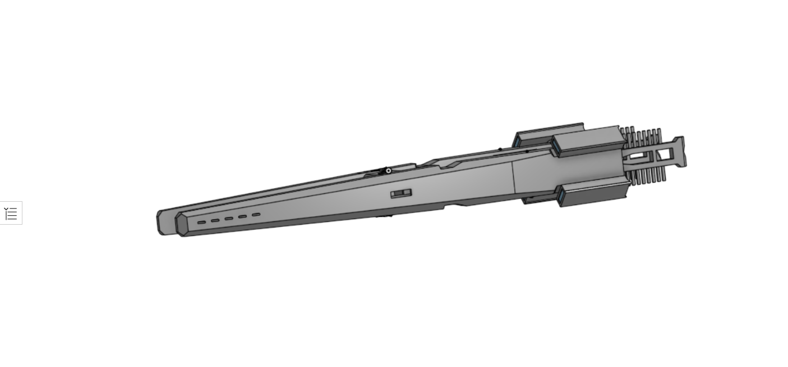
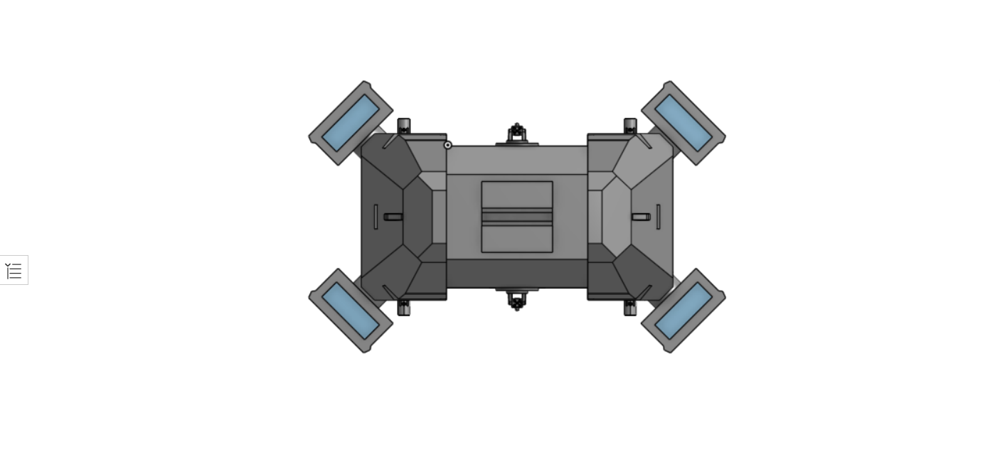

Well rounded drone carrier, once used for policing planetary systems by use of its massive interdictor assembly that its hull is built around, now fitted with extra point defense laser emplacements and two heavy guided missile turrets for anything heavy enough to survive its initial point defense onslaught, along with an increased magazine size for its two rapid cycling lateral missile launch tubes.
 